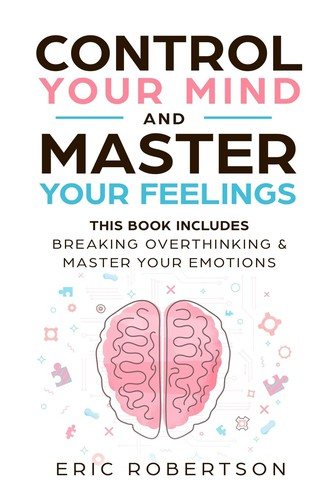
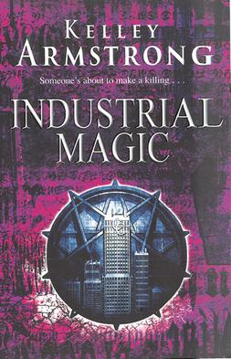

Trending Books
Game of Thrones
Available
Author: George R.R. Martin
2,479,798 ratings.63,303 reviews

Decription
Long ago, in a time forgotten, a preternatural event threw the seasons out of balance. In a land where summers can last decades and winters a lifetime, trouble is brewing. The cold is returning, and in the frozen wastes to the north of Winterfell, sinister forces are massing beyond the kingdom’s protective Wall. To the south, the king’s powers are failing—his most trusted adviser dead under mysterious circumstances and his enemies emerging from the shadows of the throne. At the center of the conflict lie the Starks of Winterfell, a family as harsh and unyielding as the frozen land they were born to. Now Lord Eddard Stark is reluctantly summoned to serve as the king’s new Hand, an appointment that threatens to sunder not only his family but the kingdom itself.
This edition
Format 835 pages, Mass Market Paperback
Published August 1, 2005 by Bantam
ISBN 9780553588484 (ISBN10: 0553588486)
Language English
edit
Control Your Mind and Master Your Feelings
Not in Library
Author: Eric Robertson
246 ratings.21 reviews
Decription
Discover How to Master Your Inner Self: This Includes - Breaking Overthinking & Master Your Emotions
We oftentimes look towards the outside world to find the roots of our problems. However, most of the times we should be looking inwards. Our mind and our emotions determine our state of being in the present moment. If those aspects are left unchecked we can get easily overwhelmed and are left feeling unfulfilled every single day.
This edition
Format 189 pages, Kindle Edition
Published September 6, 2019
ISBN 9780553588484 (ISBN10: 0553588486)
Language English
edit
Romance
The Gathering (Armstrong novel)
Available
Author: Kelley Armstrong
63,698 ratings3,494 reviews

Decription
Sixteen-year-old Maya is just an ordinary teen in an ordinary town. Sure, she doesn't know much about her background - the only thing she really has to cling to is an odd paw-print birthmark on her hip - but she never really put much thought into who her parents were or how she ended up with her adopted parents in this tiny medical-research community on Vancouver Island.
Until now.
Strange things have been happening in this claustrophobic town - from the mountain lions that have been approaching Maya to her best friend's hidden talent for "feeling" out people and situations, to the sexy new bad boy who makes Maya feel...different. Combine that with a few unexplained deaths and a mystery involving Maya's biological parents and it's easy to suspect that this town might have more than its share of skeletons in its closet.
This edition
Format 359 pages, Hardcover
Published April 12, 2011 by Harper
ISBN 9780061797026 (ISBN10: 0061797022)
Language English
edit
Thurston House (novel)
Available
Author: Danielle Steel
6,979 ratings . 174 reviews

Decription
Jeremiah Thurston built Thurston House, San Francisco's grandest mansion. When he found himself alone with his infant daughter, Sabrina, he was determined to bring her up to run the biggest mining business in California. Nothing would stop her from taking over his dynasty -- not the San Francisco earthquake, the deadly schemes of a cunning rival, the Great depression, or her own needs and determination as she carries on the traditions established by her father.
This edition
Format 416 pages, Paperback
Published August 4, 1994 by Sphere
ISBN 9780751505610 (ISBN10: 0751505617)
Language English
edit
Fantasy
Industrial Magic
Not in Library
AuthorKelley Armstrong
36,551 ratings . 986 reviews
Decription
Kelley Armstrong returns with the eagerly awaited follow-up to Dime Store Magic. Paige Winterbourne, a headstrong young woman haunted by a dark legacy, is now put to the ultimate test as she fights to save innocents from the most insidious evil of all..
In the aftermath of her mother’s murder, Paige broke with the elite, ultraconservative American Coven of Witches. Now her goal is to start a new Coven for a new generation. But while Paige pitches her vision to uptight thirty-something witches in business suits, a more urgent matter commands her attention.
This edition
Format 560 pages, Mass Market Paperback
Published March 27, 2007 by Bantam
ISBN 9780553588484 (ISBN10: 0553588486)
Language English
edit